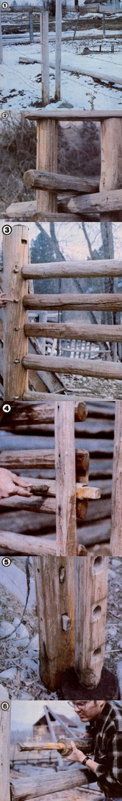

An Old-Time Double-Post Pole Fence
Save money using basic carpentry tools to create a decorative or animal containing double post fence.
September/October 1980
by Richard H. Johnson
Fencing-whether it's used to encircle a pasture or add a decorative touch to a front yard-is always expensive. But-with a little time and some basic carpentry skills, you can save money, keep your livestock at home, give your youngsters something to climb on, and preserve an ancestral craft . . . by building a doublepost pole fence! The attractive enclosures require only natural materials (if you're lucky, you can get all you need from your own woodlot) and will last for years with proper maintenance!
To assemble your traditional structure, you'll be placing two uprights-of different sizes-at each point where a fencepost is needed. Both will be 8' long, but the outside post should be about 7" in diameter, while the inner one should be about 5" thick.
Since all the posts will be set into three-foot-deep holes, it's important to treat their lower ends with a preservative solution to prevent rotting. One method is to mix one part pentachlorophenol to ten parts diesel fuel, and then stand eight or nine posts in a 55-gallon drum containing about 25 gallons of the preservative mixture. (It's best to remove the bark from the to-be-treated ends of the posts with a drawknife. The entire upright can be shaved, of course, but such extra labor isn't really necessary.)
The soaking should continue for at least two days. Once the treatment's finished, place each pair of posts in a single hole (I use oblong pits-measuring approximately 8" X 18"-spaced at intervals of ten feet). Each pair should stand five feet high and be about five inches apart at their bases. Now fill in the holes with soil, and tamp it with an iron bar or sledge hammer to ensure that the earth holds the uprights securely in place.
At each 90° corner, you'll need to dig the postholes at a 45° angle to the rest of the fence, and-instead of leaving a five-inch space-allow about eight inches between the posts . . . to accommodate horizontal poles coming from two different directions. (When you have to allow for a gentle fenceline bend, try to set the posts so that they bisect the angle of the turn . . . and be sure that you leave a little extra room between the pair of wooden uprights.)
THE POLES
The horizontal poles for a double-post fence should be about 12' long and 5" in diameter at their larger ends. (Again, if you prefer, all the bark can be removed with a drawknife.) When you place the crosspieces between the posts-each layer resting on tips of the one beneath it, as shown in the photos-the poles should be alternated so that all the slender ends don't wind up between one pair of posts, with all the heavy ends at the other.
To begin, place a stone-about 5" in height-between each pair of posts . . . to act as a foundation for the first layer of poles and to prevent them from coming in contact with the ground. Next, lay a pole on the stones between the first two uprights . . . leave the next section of the fence empty . . . then put a pole in the fol lowing section. (If any of the horizontal sticks' ends are too thick to fit between the posts, trim them with a hatchet.)
When the first row has been finished in this manner, fill in the fence sections that you skipped over when putting in the first poles. Continue to insert the stakes-one layer at a time, filling in alternate fence sections-along the entire length of the enclosure before placing the next level. By the time you reach the post tops, your fence should contain six rungs.
CAP IT OFF
As you proceed, layer upon layer, the supporting posts may begin to spread apart at the top. To help prevent this, you can wrap the uprights with a couple of loops of baling wire. Then, when all the poles are in place, secure the tops of the posts permanently with caps (which will prevent any spreading during the coming years). To do so, just lay a small board across the top of a post set, drill holes-using a brace and bit-through the cap board and into the end of each post, and drive in thumb-size tapering pegs. (If the posts spread before the caps are in place, loop a chain around the tops of the pair, slip a large crowbar through the loop, and twist until the post tops are close enough together to be capped.)
ALL ABOUT GATES
Where the fence will be interrupted by a gate, use single fenceposts (choose your largest and sturdiest) sunk-like the others-three feet into the ground. Then measure and mark where the horizontal poles will contact each upright, and bore 2" to 2-1/2" holes at the indicated points. Trim the ends of the poles to form long (12") tips-about 2" in diameterand insert them in their respective holes. For additional strength, drill sideways through both the post and the end of each pole, and insert small pegs in the bores.
The gate itself is made in single-pole fashion. The posts can be bored and the poles inserted and pegged, exactly as was done for the fence's single-end uprights. (You may also want to attach a diagonal brace across the gate-with nails or pegs-for extra strength.)
The end of the gate that will be hinged to the fence consists of a special "hinge post", which is pointed-like a pencil-on both ends. Fit the bottom of this post into a dimple in a short stump buried in the ground adjacent to the last fencepost, and the upper end into a hole in a board that's been securely pegged to the top of the same upright. As the gate is opened and closed, the hinge post pivots, riding in the described sockets. (You can rub a small amount of animal fat on the pivot points to help keep the gate swinging smoothly.)
To hold the gate closed, simply loop rope around the fencepost and over the gate's upright . . . or fashion a gatemounted slide bolt to slip into a notch in the fence. The bolt can ride on one of the gate poles, and will provide a nice finishing touch to a totally natural fence.
FUTURE BEAUTY
If the posts and poles have been stripped of their bark, the finished fence should be painted with the same treatment solution that was used on the post ends. This will give the wood an attractive color and prevent the timber from turning gray with age. And, by repeating this procedure every year or so, you can keep your old-fashioned fence looking new and fresh for a long time to come.
So, you see, getting along with less doesn't mean doing without. Building o this old-time, double-post fence will reduce your dependence on the hardware. store . . . create an attractive, practical, and value-enhancing addition to your property . . . and give you every right to feel proud as a peacock!
 [1] Two rows of posts are set , each pair in a single three-foot-deep hole. Temporary barbed wire is in place to keep the livestock at home while the final fence construction is in progress. [2] When you reach a 900 corner, dig postholes at a 450 angle and leave an eight-inch space between the posts to accommodate horizontal poles coming from two different directions. ""Cap"" the posts to keep them from spreading apart. [3] Pegs - aside from from adding an old-time look to your enclosure - will help to keep the crosspieces in place. [4] A slide bolt will hold the gate closed and a nice finishing touch to your totally natural fence. [5] The gate swings on a special ""hinge post"", which is pointed like a pencil at both ends, and fits - at its base - into a dimple in a short stump buried in the ground adjacent to the last fencepost. [6] The author demonstrates the proper technique for attaching the trimmed ends of horizontal poles to a pre-drilled single gatepost. |
 |
|